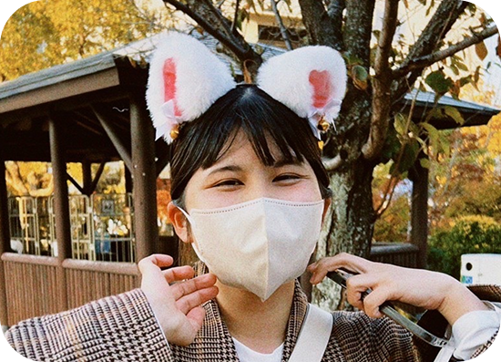
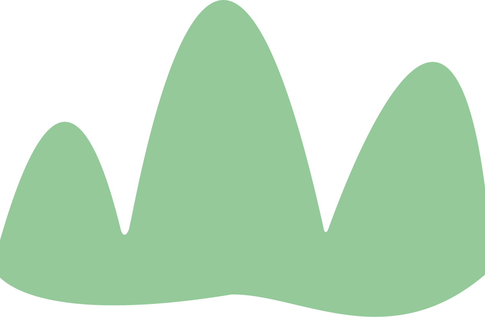
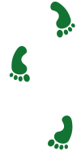

お問い合わせ
お問い合わせ

麓美和子
Fumoto Miwako
文章だけではなかなか読んでもらえない内容でも、
デザインによって分かりやすく整理されることで、
多くの人に伝わると感じています。
私自身も日常の中で、
情報が整理されたデザインに何度も助けられてきました。
伝えたい想いや情報を、誰かに届く形にすること。
それがデザインの大きな力だと思っています。
だからこそ私は、課題や想いの麓に立ち、そこから山頂を目指すように、
相手と共に答えを形にしていくデザイナーを目指しています。

私はこれまで、デザインに興味を持ちながらも、「学校では学んでいないから」という理由で、
自分には難しいとどこかで線を引いていました。
それでも諦めきれず、現在の会社で自ら手を挙げ、SNS運用を通してデザインに関わる機会を得ました。
自分で調べ、試行錯誤を繰り返す中で、少しずつ形にできることが増えてきました。
その過程で強く感じたのは、「好きこそ物の上手なれ」という言葉の通り、
好きだからこそ向き合い続けることができるということです。
この経験を通して、デザインは自分にとって、
「やってみたいこと」ではなく、「これからも続けていきたいこと」へと変わりました。
